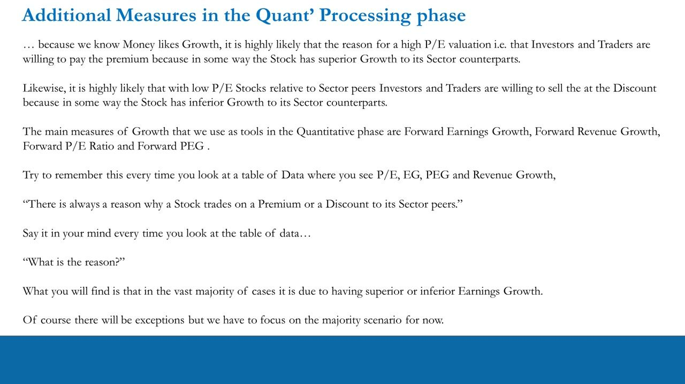
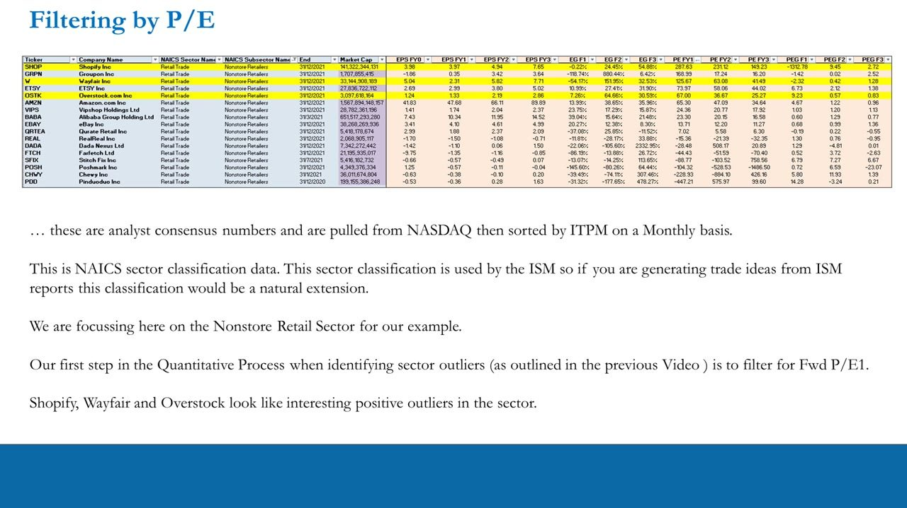
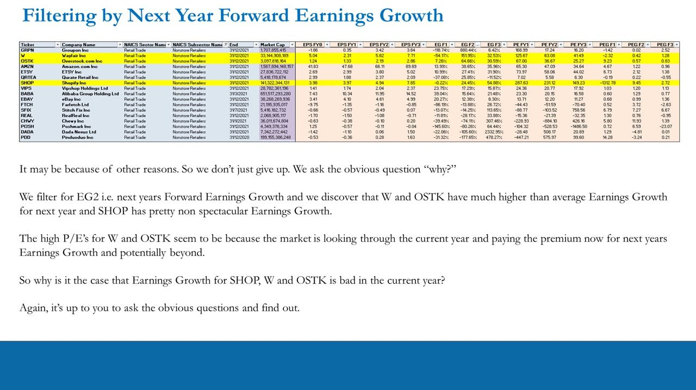
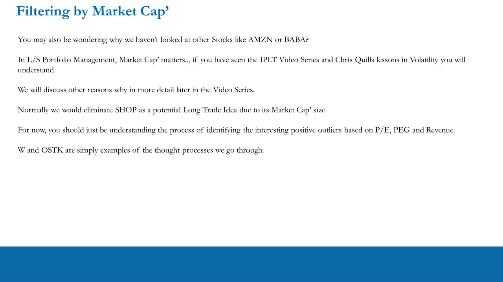
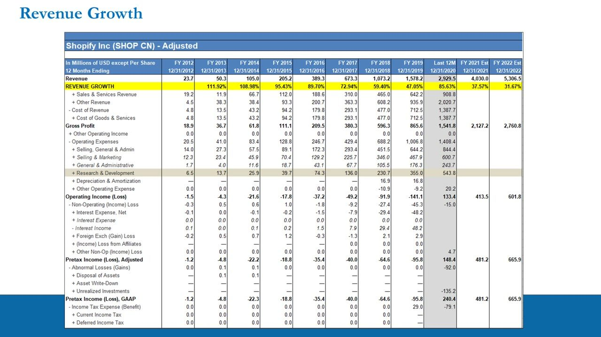
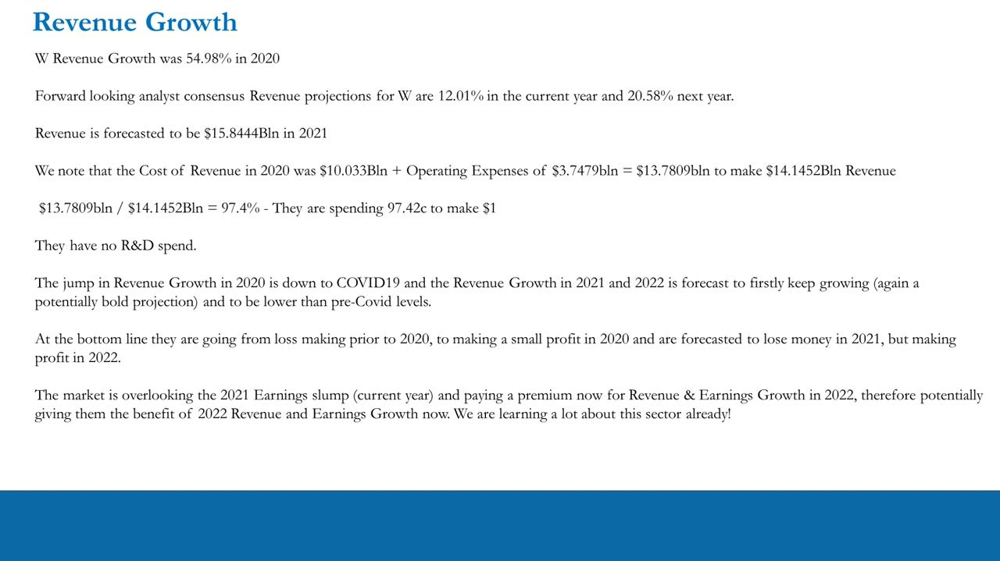
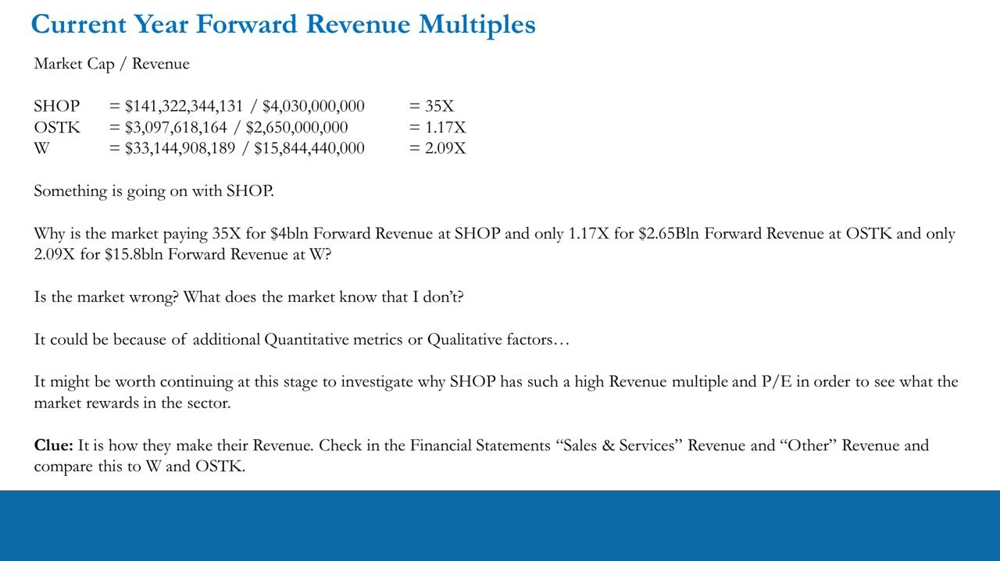
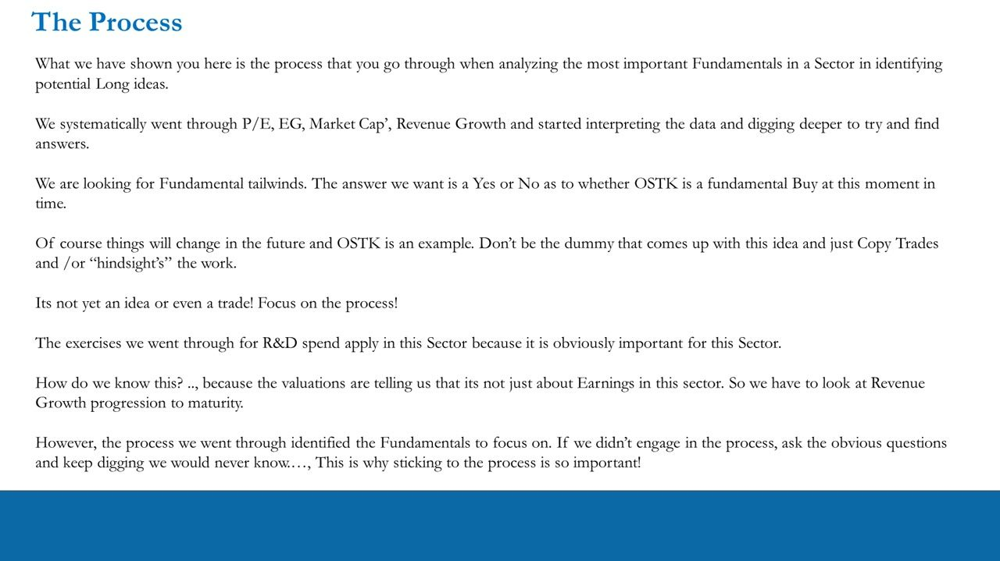

Trade Idea Generation – Quantitative Processing 2
The quant pass in full: after the forward P/E outlier scan you layer in three more growth tools (Forward Earnings Growth, Forward Revenue Growth, Forward PEG), then dig into the income statement — worked live over the Nonstore Retail sector on SHOP, W (Wayfair) and OSTK (Overstock).
Money likes growth, so a premium/discount P/E is almost always about superior/inferior forward earnings growth — you confirm it with a multi-factor screen (EG, Revenue Growth, PEG) and an income-statement deep-dive, never with a snap 'cheap/expensive' call.
The gist
- Layer three growth tools onto the forward P/E scan from L22: Forward Earnings Growth (EG), Forward Revenue Growth and Forward PEG (= forward P/E ÷ earnings-growth %). The 18-column screener over the Nonstore Retail sector shows all four at F1/F2/F3 horizons.
- The core rule: 'There is ALWAYS a reason a stock trades at a premium or discount to its sector peers' — usually superior/inferior earnings growth. Say it every time you look at a data table and ask 'What is the reason?'. An outlier is an inquiry, not a conclusion.
- Sorted by PE FY1, SHOP (287.63), W (125.67) and OSTK (67.00) are the standout positive outliers. Re-sort by next-year earnings growth (EG F2) and W (151.95%) and OSTK (64.66%) jump out while SHOP (24.45%) is unremarkable — the premium is the market looking THROUGH this year to next year's growth.
- Market Cap matters in L/S: SHOP would normally be eliminated as a long on size alone. W and OSTK are the live examples — the point is the PROCESS of identifying interesting positive outliers on P/E, PEG and Revenue, not the tickers.
- Price-to-Sales (Market Cap / forward Revenue) exposes what the market rewards: SHOP ~35X for $4bln revenue vs OSTK 1.17X for $2.65bln and W 2.09X for $15.8bln. The 35X gap is a flag to dig into HOW SHOP makes its revenue (Sales & Services vs Other).
- Income-statement deep-dive on cost efficiency and R&D: cents to make $1 of revenue — SHOP 95c, W 97.42c, OSTK 98c. R&D per $1 revenue — SHOP 18.47c, OSTK 5.292c, W none. R&D per share $4.84 (SHOP) / $3.34 (OSTK); as a % of EPS the delta is +122% (SHOP) vs +269% (OSTK), so OSTK has the most latent upside.
Beyond P/E — the four growth tools
- Because money likes GROWTH, a high P/E relative to peers most likely means the market pays a PREMIUM for superior growth; a low relative P/E means it sells at a DISCOUNT for inferior growth.
- The main growth tools used in the quantitative phase: Forward Earnings Growth (EG), Forward Revenue Growth, Forward P/E Ratio and Forward PEG.
- The rule to repeat at every data table: 'There is always a reason why a stock trades on a premium or a discount to its sector peers.' Then ask: 'What is the reason?'
- In the vast majority of cases the reason is superior or inferior EARNINGS GROWTH — there are exceptions, but focus on the majority scenario.
This lesson picks up exactly where L22's forward-P/E outlier scan stopped and adds the growth factors that explain WHY an outlier is an outlier.

Filtering by forward P/E — the sector screener
- The screen: Nonstore Retail sector, analyst-consensus numbers pulled from NASDAQ and re-sorted by ITPM monthly. 18 columns — Ticker, Company, NAICS Sector/Subsector, End, Market Cap, EPS FY0-FY3, EG F1/F2/F3, PE FY1/FY2/FY3, PEG F1/F2/F3.
- NAICS is the same sector classification the ISM uses — so ideas generated from ISM reports extend naturally into this table.
- Step one (from L22): sort by forward P/E (PE FY1) descending. Top of the table: SHOP 287.63, GRPN 168.99, W 125.67, ETSY 73.97, OSTK 67.00, AMZN 65.30, then VIPS 24.36, BABA 23.30, EBAY 13.71, QRTEA 7.02, and negatives REAL -15.36, DADA -28.48, FTCH -44.43, SFIX -88.77, POSH -104.32, CHWY -228.93, PDD -447.21.
- SHOP, W (Wayfair) and OSTK (Overstock) are highlighted as the interesting positive outliers.
A negative P/E is a loss-maker (negative EPS), not a 'cheap' stock — so the negatives at the bottom are the sector's loss-making names, not bargains.

Filtering by next-year earnings growth (EG F2)
- Re-sort the SAME table by EG F2 (next year's Forward Earnings Growth) descending, highlighting W, OSTK and SHOP.
- EG F2 values: GRPN 880.44%, W 151.95%, OSTK 64.66%, AMZN 38.65%, ETSY 27.41%, QRTEA 25.85%, SHOP 24.45%, VIPS 17.23%, BABA 15.64%, EBAY 12.38%.
- W and OSTK have much higher-than-average earnings growth for next year; SHOP's is unremarkable — so their high P/Es are the market looking THROUGH the current year and paying now for next year's growth and beyond.
- So why is current-year earnings growth poor for SHOP, W and OSTK? Don't give up — ask the obvious question and find out.

Filtering by Market Cap — why size eliminates SHOP
- Why not AMZN or BABA? In L/S portfolio management Market Cap matters (as covered in the IPLT series and Chris Quill's volatility lessons; more detail later in the series).
- SHOP would normally be eliminated as a potential LONG idea purely on its Market Cap size.
- W and OSTK are simply examples of the thought processes — the goal here is to understand the PROCESS of identifying interesting positive outliers on P/E, PEG and Revenue.

Revenue growth & cost efficiency — SHOP
- SHOP revenue growth was 85% in 2020 (COVID-driven). Forward analyst-consensus revenue growth: 37.57% current year, 31.67% next year — both a lower rate than pre-COVID and a potentially bold projection. Revenue forecast $4.030bln in 2021.
- Cost efficiency: 2020 Cost of Revenue $1.3877bln + Operating Expenses $1.4084bln = $2.7961bln to make $2.9295bln revenue -> $2.7961 / $2.9295 = 95% -> they spend ~95c to make $1.
- R&D = $543.8mln = 19.45% of total costs. So 0.1945 x 0.95 = 18.47 cents of every $1 of revenue goes to R&D. With 112mln shares, $543mln / 112mln ≈ $4.84 per share.
- Bottom line: SHOP goes from loss-making to profit in 2020 and is forecast to make more profit in 2021 and 2022. Income-statement figures are free from company Investor Relations sites.
Heavy R&D isn't waste in a growth sector — it's management intentionally plowing revenue back to grow the top line. If R&D went to zero, the $4.84/share could be added back to pre-tax earnings.

Revenue growth & cost efficiency — W and OSTK
- W (Wayfair): revenue growth 54.98% in 2020; forward consensus 12.01% current year, 20.58% next year; revenue forecast $15.8444bln in 2021. Cost of Revenue $10.033bln + Op-Ex $3.7479bln = $13.7809bln to make $14.1452bln -> 97.42c to make $1. NO R&D spend (none in 2020 or across its public history).
- W's bottom line: loss-making before 2020, a small profit in 2020, forecast to LOSE money in 2021, then profit in 2022 — the market overlooks the 2021 slump and pays a premium now for 2022 revenue & earnings growth.
- OSTK (Overstock): revenue growth 74.71% in 2020; forward consensus 3.96% current year, 15.62% next year (2022's 15.62% is higher than all pre-COVID years); revenue forecast $2.6508bln in 2021. Cost of Revenue $1.970bln + Op-Ex $546.1mln = $2.5161bln to make $2.549bln -> 98c to make $1.
- OSTK R&D = $137mln = 5.4% of total costs. So 0.054 x 0.98 = 5.292 cents of every $1 of revenue on R&D. With 41mln shares, $137mln / 41mln ≈ $3.34 per share.

Price-to-Sales — Market Cap / forward Revenue
- Current-year forward revenue multiple (Market Cap / Revenue): SHOP = $141,322,344,131 / $4,030,000,000 = 35X; OSTK = $3,097,618,164 / $2,650,000,000 = 1.17X; W = $33,144,908,189 / $15,844,440,000 = 2.09X.
- Something is going on with SHOP: why 35X for $4bln forward revenue vs 1.17X for OSTK's $2.65bln and 2.09X for W's $15.8bln?
- Is the market wrong? What does the market know that I don't? It could be other quantitative metrics or qualitative factors.
- Clue: it's HOW they make their revenue — check 'Sales & Services' vs 'Other' revenue in the financial statements and compare SHOP to W and OSTK.
The R&D-to-EPS delta ties it together: SHOP $4.84 / $3.98 EPS = 1.22 (+122% if R&D went to zero) vs OSTK $3.34 / $1.24 EPS = 2.69 (+269%). OSTK has the highest delta — from a surface quant + volatility view, the most latent upside. It's a back-of-the-envelope sensitivity read, not a forecast.

The process — a Yes/No, not a copied trade
- The demonstrated process: systematically go through P/E, EG, Market Cap, Revenue Growth, interpret the data and keep digging for answers.
- You're hunting FUNDAMENTAL TAILWINDS — the output you want is a Yes or No on whether OSTK is a fundamental buy at this moment.
- This is NOT yet an idea or a trade — OSTK is an example; things change. Don't be the person who copy-trades or hindsight-trades the workings.
- R&D matters HERE because the valuations tell you this sector isn't just about earnings — you must track revenue-growth progression to maturity. If you don't engage the process and ask the obvious questions, you'd never know. That's why sticking to the process matters.

Glossary
- The four growth toolsThe measures used in the quantitative phase on top of the forward P/E scan: Forward Earnings Growth (EG), Forward Revenue Growth, Forward P/E Ratio and Forward PEG. Shown at F1/F2/F3 (one/two/three years forward) in the 18-column sector screener.
- Forward PEGForward P/E divided by the forward earnings-growth rate (%), shown as PEG F1/F2/F3. Normalises the P/E for growth so premiums are comparable across stocks growing at different rates. Blows up to huge negative/positive values when the growth denominator is near-zero or negative (loss-makers, distorted COVID base) — e.g. SHOP F1 -1312.78 / F2 9.45 / F3 2.72; W -2.32 / 0.42 / 1.28; OSTK 9.23 / 0.57 / 0.83.
- Premium/discount has a reason'There is always a reason why a stock trades on a premium or a discount to its sector peers.' Said at every data table, followed by 'What is the reason?' — in the vast majority of cases it is superior or inferior earnings growth. An outlier is an inquiry, not a conclusion.
- Looking through the current yearWhen a high P/E is unexplained by this year's earnings, the market is paying the premium NOW for NEXT year's growth. W (EG F2 151.95%) and OSTK (64.66%) are priced through a weak 2021 to a strong 2022; W is even forecast to lose money in 2021 yet still commands a premium.
- Price-to-Sales (Market Cap / Revenue)The forward revenue multiple, used when earnings are distorted. SHOP 35X ($141.3bln / $4.03bln), OSTK 1.17X ($3.10bln / $2.65bln), W 2.09X ($33.1bln / $15.8bln). The 35X vs 1.17X gap flags that the market rewards HOW SHOP makes its revenue (Sales & Services vs Other), not just how much.
- Cents to make $1Cost efficiency from the income statement = (Cost of Revenue + Operating Expenses) / Revenue. SHOP 95c, W 97.42c, OSTK 98c to make $1 of revenue — the lower the number, the more operating leverage as revenue scales.
- R&D intensityR&D per $1 of revenue, per share, and as an EPS delta. SHOP 18.47c per $1 (19.45% of total costs) / $4.84 per share; OSTK 5.292c per $1 (5.4% of total costs) / $3.34 per share; W none. If R&D went to zero it adds back to pre-tax earnings: SHOP +122% EPS ($4.84 / $3.98), OSTK +269% EPS ($3.34 / $1.24) — OSTK has the highest delta, so the most latent upside. A back-of-the-envelope sensitivity read, not a forecast.